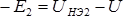
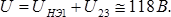
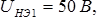
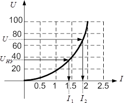

2. Графические методы расчета нелинейных цепей
Рассмотрим расчет простейших резистивных цепей, содержащих нелинейные элементы, графическими методами. При этом следует иметь в виду, что в ряде случаев можно обойтись без построения суммарных ВАХ ветвей или схемы в целом.
Пример 2.1
Для схемы (рис. 2.1) дано: R=20 Ом, ВАХ НЭ (рис. 2.2).
Определить напряжение U, при котором UR=UНЭ.
 |
|
| Рис. 2.1 | Рис. 2.2 |
1. Построим характеристику  .
.
2. В точке пересечения вольт-амперных характеристик линейного и нелинейного элементов напряжения на этих элементов равны (элементы соединены последовательно , и ток один и тот же):
3. В соответствии с законом Кирхгофа для схемы получим:
Пример 2.2
Для схемы (рис. 2.3) дано: вольт-амперные характеристики нелинейных элементов представлены на рис. 2.4. Определить все токи.
 |
 |
| Рис. 2.3 | Рис. 2.4 |
1. Так как напряжение U является и напряжением на первом нелинейном элементе, то по ВАХ этого элемента определяем ток в нем: 
2. Для определения тока во второй ветви необходимо найти напряжение на втором нелинейном элементе. В соответствии с уравнением  получим Следовательно,
3. Ток в неразветвленной части схемы равен: 
Пример 2.3.
Для схемы (рис. 2.5) дано: напряжение на параллельном участке цепи вольт-амперные характеристики нелинейных элементов представлены на рис. 2.6.
Определить подводимое к схеме напряжение.
 |
 |
| Рис. 2.5 | Рис. 2.6 |
1. Пользуясь ВАХ нелинейных элементов НЭ2 и НЭ3, напряжение на которых задано, определяем токи в этих ветвях:

2. Определяем ток в НЭ1:
3. По ВАХ НЭ1 определяем напряжение на этом элементе, оно равно: 
4. Следовательно, 
Пример 2.4
Для схемы (рис. 2.7) дано: R=30 Ом, напряжение  вольт-амперная характеристика одинаковых нелинейных элементов (рис. 2.8).
Определить токи.
 |
 |
| Рис. 2.7 | Рис. 2.8 |
1. Ток I2 определяем по ВАХ НЭ, так как напряжение на нем известно: .
2. Так как НЭ одинаковые, то  . Следовательно, напряжение на сопротивлении R и ток в этой ветви равны соответственно:
. Следовательно, напряжение на сопротивлении R и ток в этой ветви равны соответственно:
3. Ток 
Пример 2.5
Для схемы (рис. 2.9) дано: напряжение  вольт-амперная характеристика одинаковых нелинейных элементов (рис. 2.10). Определить токи.
вольт-амперная характеристика одинаковых нелинейных элементов (рис. 2.10). Определить токи.
 |
 |
| Рис. 2.9 | Рис. 2.10 |
1. Ток I2 определяем по ВАХ НЭ, так как напряжение на нем известно:  .
.
2. Так как НЭ одинаковые, то напряжение на каждом из двух последовательно соединенных НЭ равны 0.5U = 35 В. Следовательно, ток I1 = 1.4 A.
3. Ток I = I1 + I2 = 3.2 A.